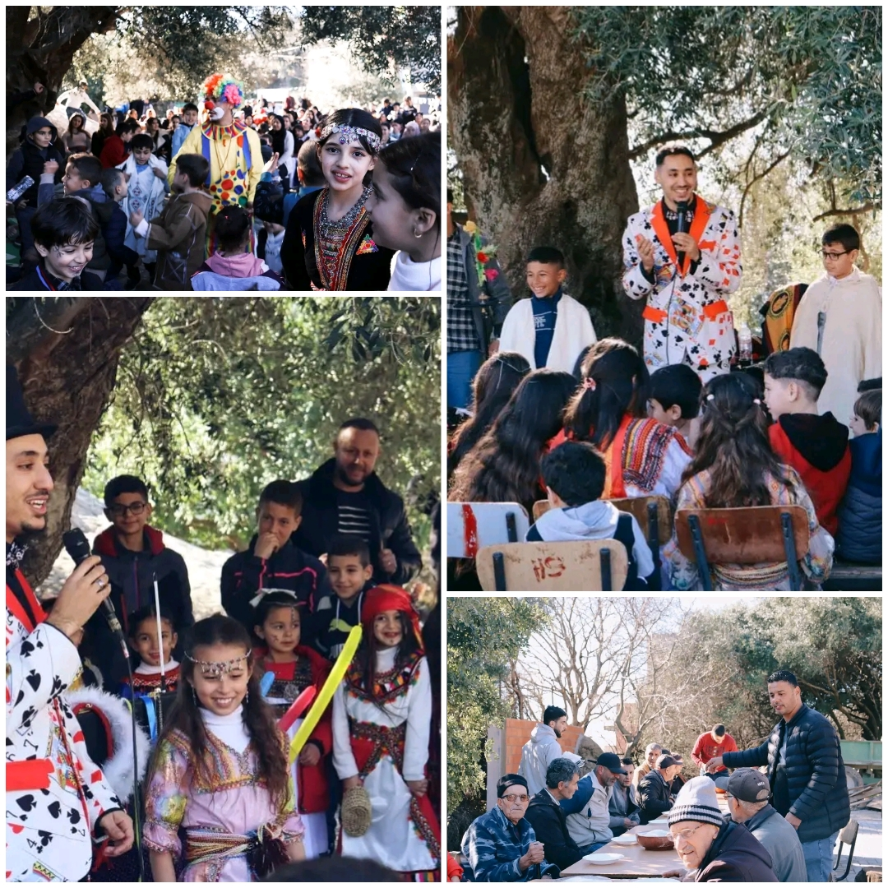
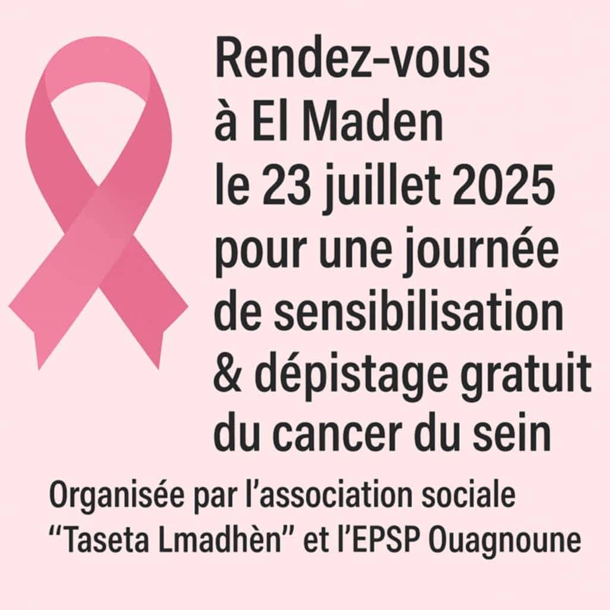
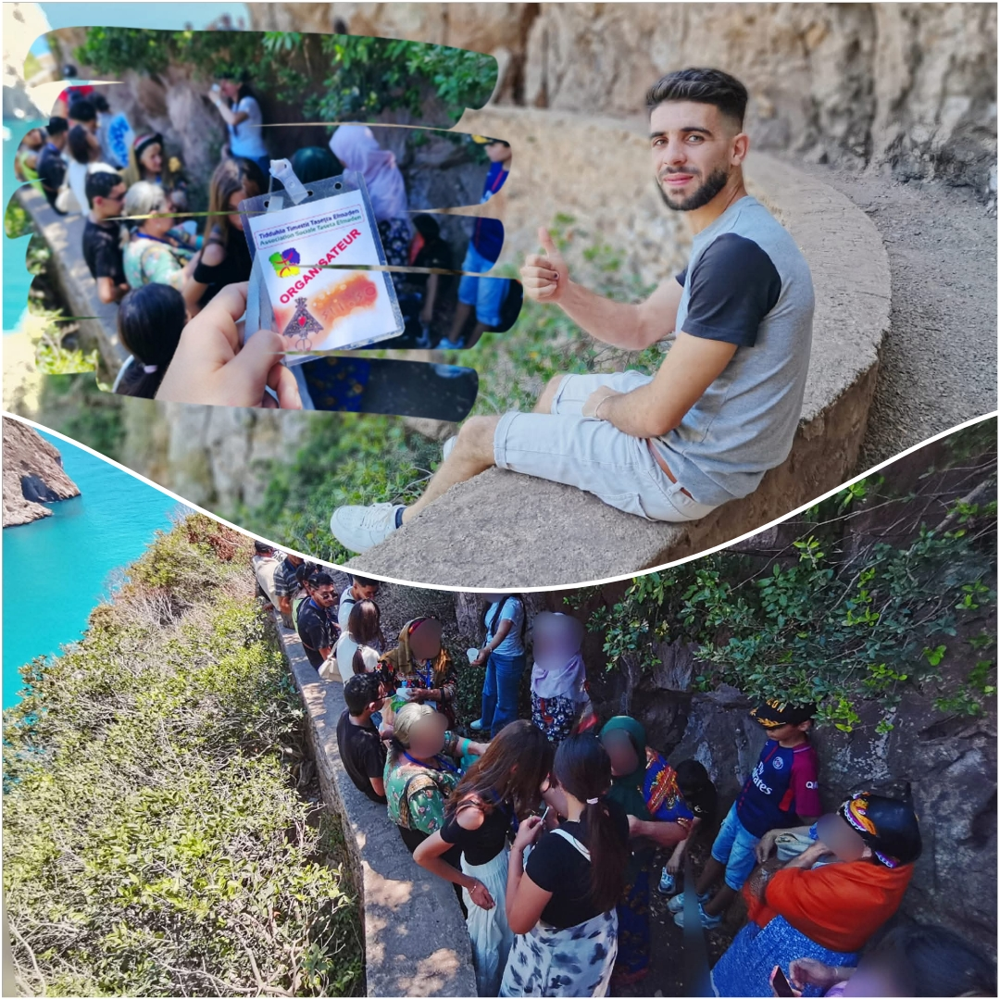
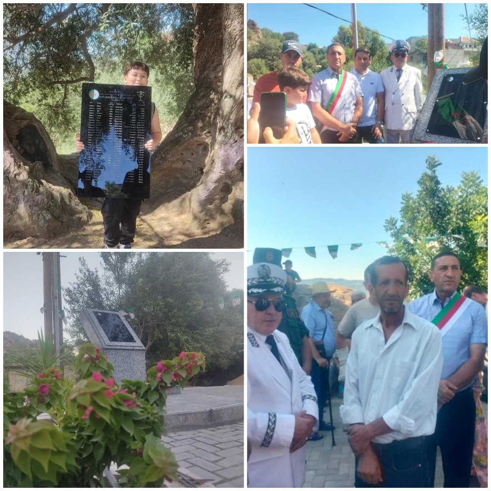
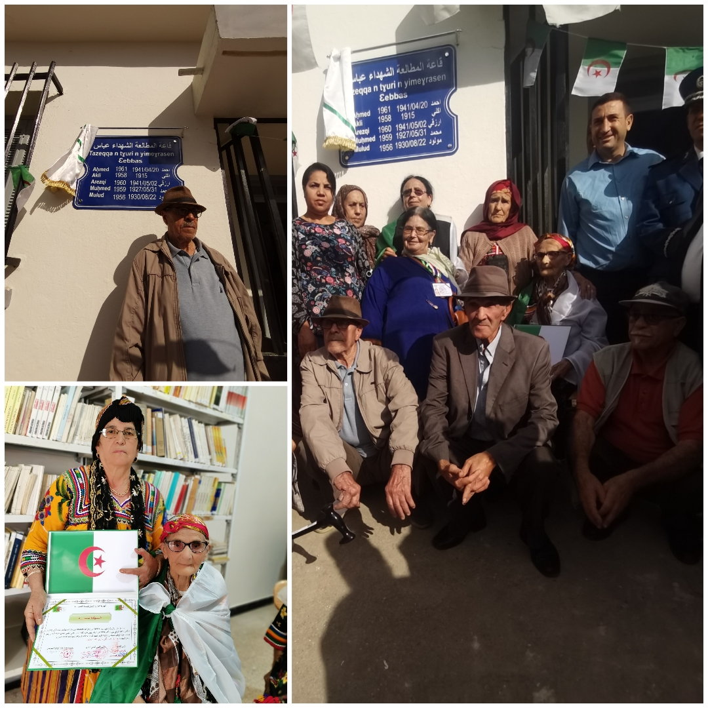

Nos Réalisations

Janvier 2025
Nouvel An Amazigh (Yennayer 2976)
Organisation d’une fête conviviale (waâda) au village d’El Maden.
Statut: Complété100%

Juillet 2025
Campagne de dépistage du cancer
Sensibilisation et prévention en partenariat avec l’EPSP Ouagnoune.
Impact Communautaire85%

Juillet 2025
Excursion familiale à Béjaïa
Sortie récréative au profit des familles du village d'El Maden.
Taux de Participation95%

Juillet 2025
Monument des martyrs
Inauguration officielle à la placette en hommage aux combattants.
Finition Travaux100%

Octobre 2024
Hommage à la famille Abbas
Forum mémoriel honorant cinq frères Abbas tombés pour la liberté.
Couverture Historique90%

En Continu
Bénévolat féminin
Valorisation et remerciements publics aux femmes actives du village.
Présence Terrain75%